長期トレンド
JKMとJEPXシステムプライスの推移グラフ
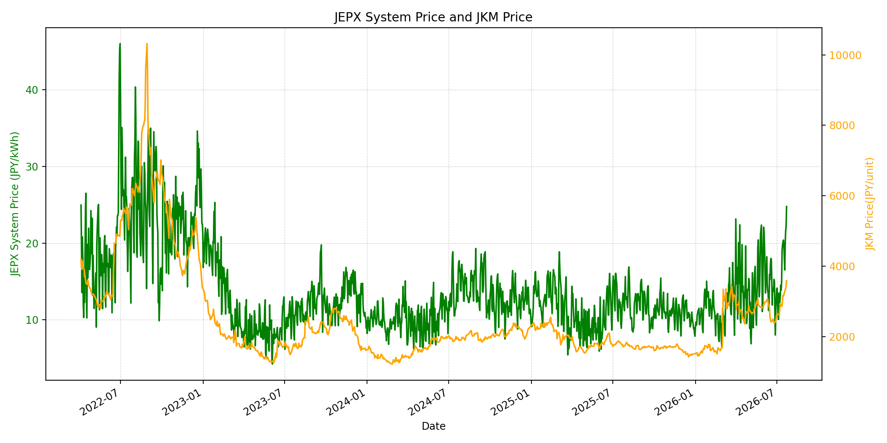
WTIの推移グラフ
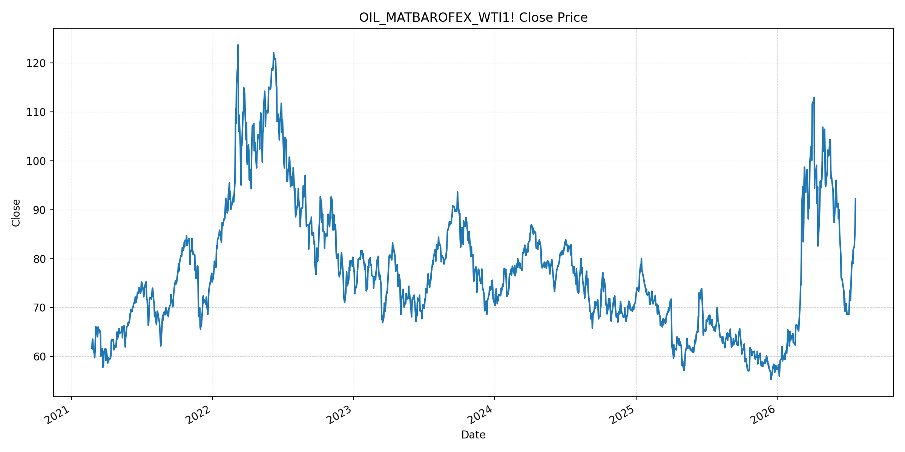
JEPXエリアプライスグラフ（直近一年分）
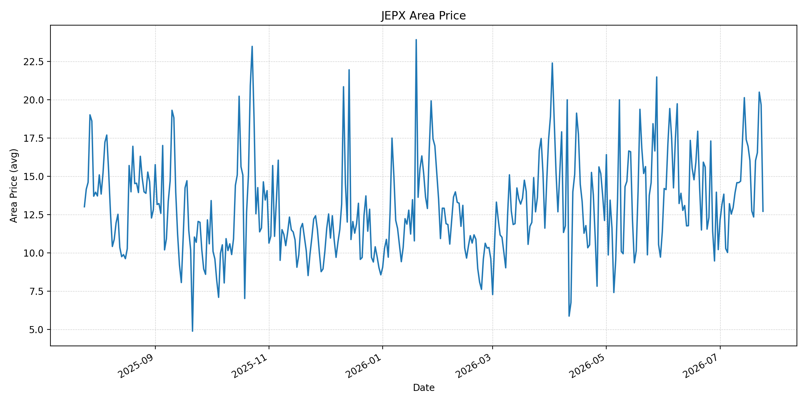
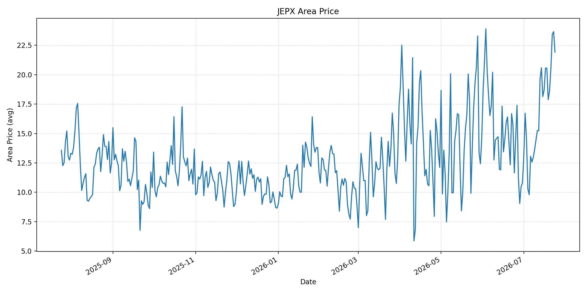
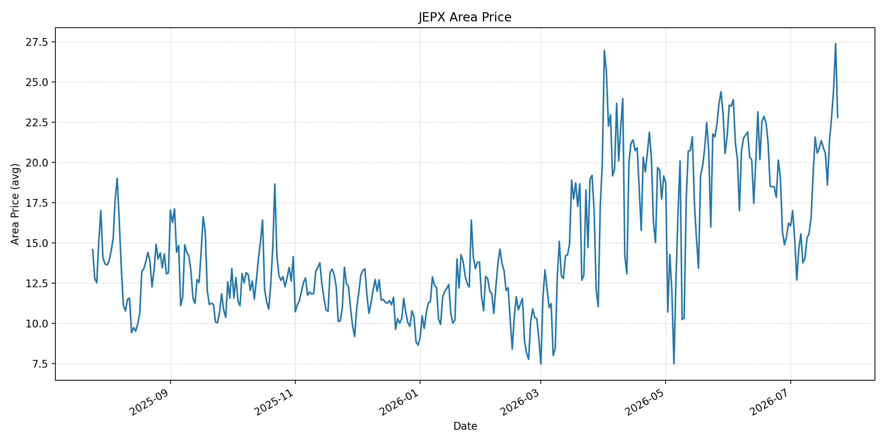
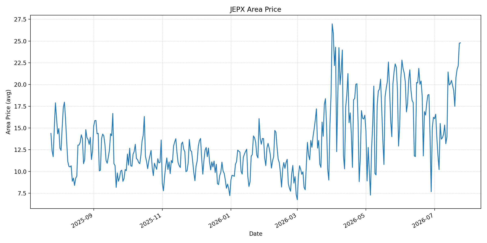
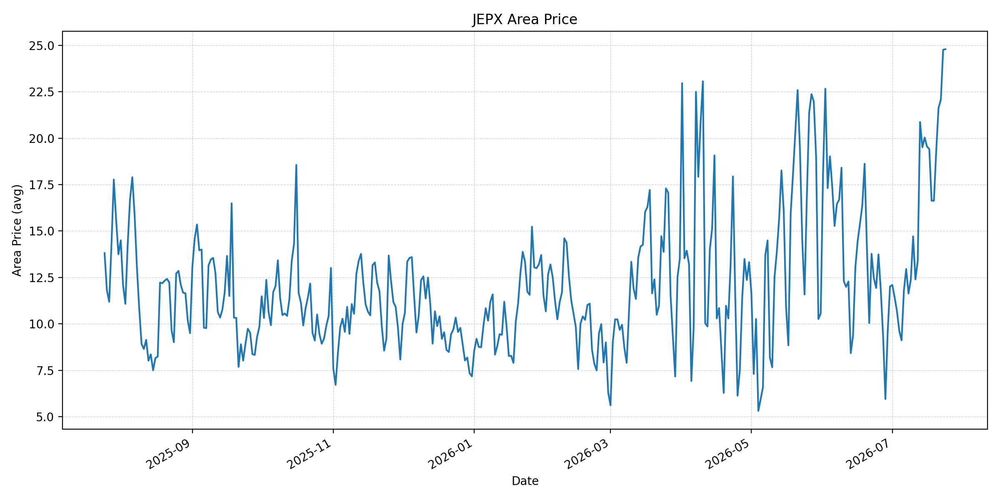
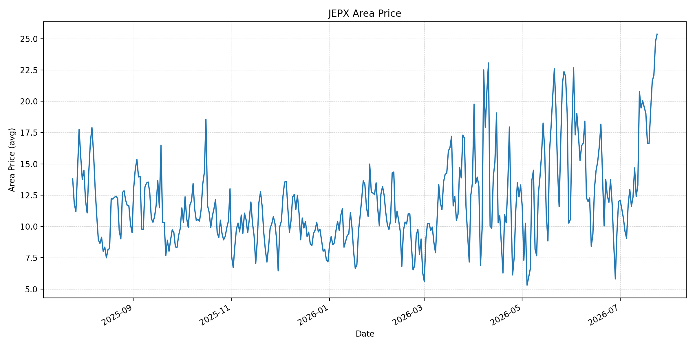
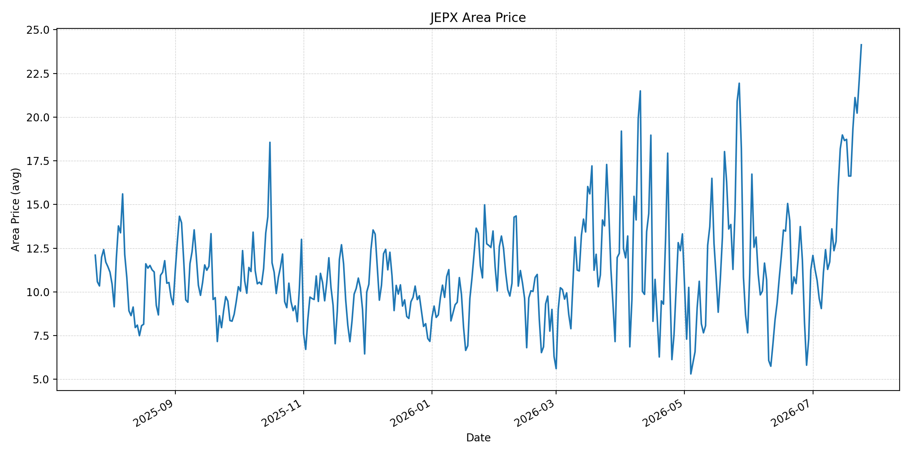
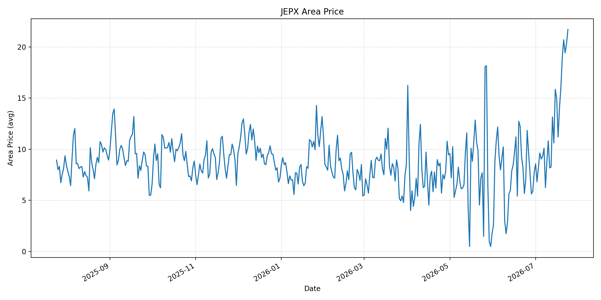
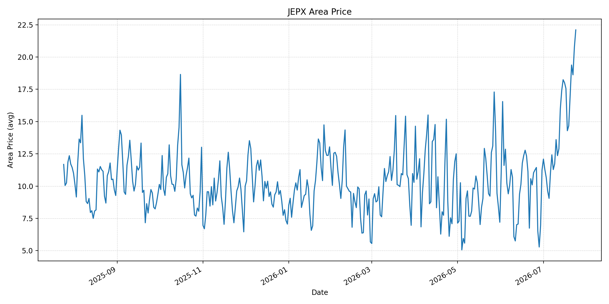
短期トレンド
JKMとJEPXシステムプライスの推移グラフ
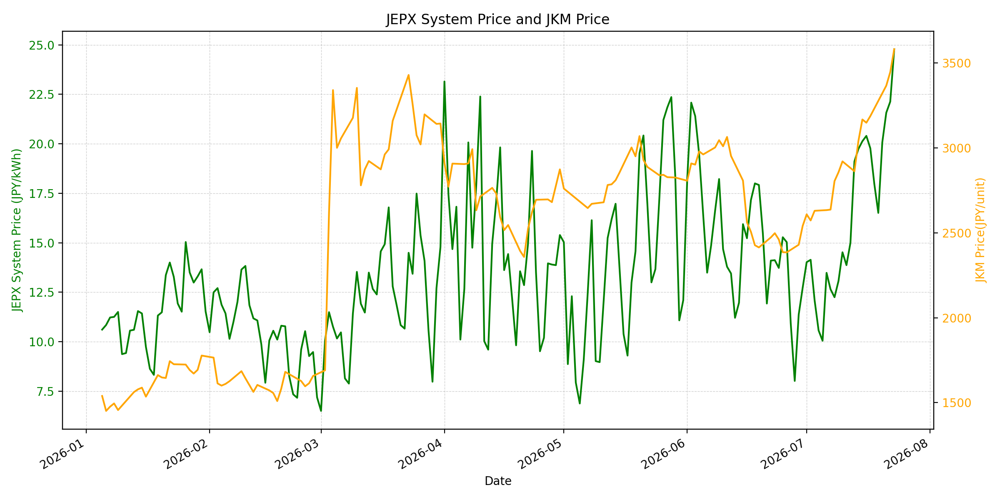
WTIの推移グラフ
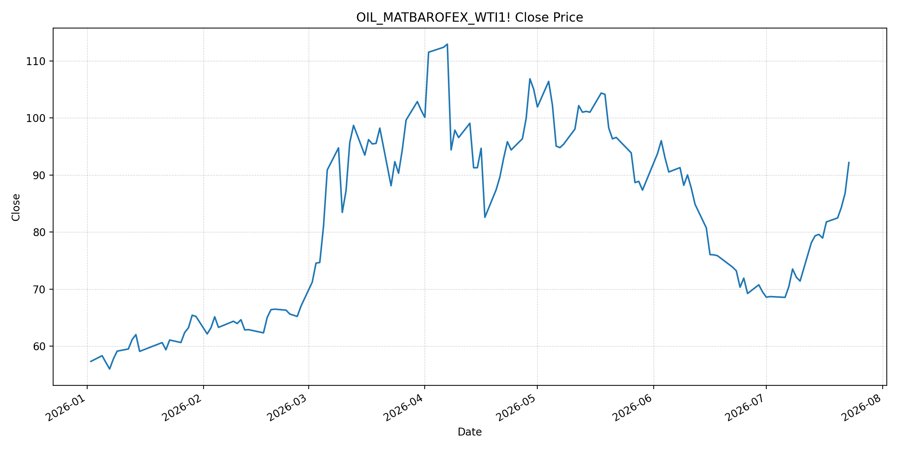
JEPXシステムプライス
JEPXは受渡日ベースの最新非空値で評価しています。最新値は 2026-07-24 分です。先週終値は 2026-07-17 時点の直近値、先月終値は 2026-06-30 時点の直近値で評価しています。
| エリア | 当日価格 | 前日価格 | 前日比（％） | 先週終値 | 先週比（％） | 先月終値 | 先月比（％） | 過去最高値 | 最高値比（％） |
|---|---|---|---|---|---|---|---|---|---|
| システム | 22.81 | 24.78 | -7.95 | 19.77 | 15.38 | 12.73 | 79.18 | 64.06 | -64.39 |
| 北海道 | 12.71 | 19.66 | -35.35 | 16.02 | -20.66 | 10.21 | 24.49 | 73.92 | -82.80 |
| 東北 | 21.91 | 23.66 | -7.40 | 20.56 | 6.57 | 10.78 | 103.25 | 84.92 | -74.20 |
| 東京 | 22.79 | 27.38 | -16.76 | 20.92 | 8.94 | 16.23 | 40.42 | 86.13 | -73.54 |
| 中部 | 24.79 | 24.76 | 0.12 | 19.90 | 24.57 | 16.23 | 52.74 | 52.06 | -52.38 |
| 北陸 | 24.79 | 24.76 | 0.12 | 19.41 | 27.72 | 12.01 | 106.41 | 46.48 | -46.67 |
| 関西 | 25.36 | 24.76 | 2.42 | 19.02 | 33.33 | 12.00 | 111.33 | 46.48 | -45.44 |
| 中国 | 24.14 | 22.11 | 9.18 | 18.73 | 28.88 | 11.26 | 114.39 | 46.48 | -48.07 |
| 四国 | 21.71 | 20.30 | 6.95 | 11.20 | 93.84 | 7.72 | 181.22 | 46.48 | -53.30 |
| 九州 | 22.10 | 20.75 | 6.51 | 17.56 | 25.85 | 11.24 | 96.62 | 40.54 | -45.49 |
LNG先物価格
最新値は 2026-07-23 の LNG(close) です。前日価格は直近非空値の 2026-07-22、先週終値は 2026-07-16 時点の直近値、先月終値は 2026-06-30 時点の直近値で評価しています。
| 当日価格 | 前日価格 | 前日比（％） | 先週終値 | 先週比（％） | 先月終値 | 先月比（％） | 過去最高値 | 最高値比（％） |
|---|---|---|---|---|---|---|---|---|
| 3582.00 | 3447.00 | 3.92 | 3149.00 | 13.75 | 2541.00 | 40.97 | 10319.00 | -65.29 |
石油先物価格
最新値は 2026-07-23 の OIL(close) です。前日価格は直近非空値の 2026-07-22、先週終値は 2026-07-16 時点の直近値、先月終値は 2026-06-30 時点の直近値で評価しています。
| 当日価格 | 前日価格 | 前日比（％） | 先週終値 | 先週比（％） | 先月終値 | 先月比（％） | 過去最高値 | 最高値比（％） |
|---|---|---|---|---|---|---|---|---|
| 92.19 | 86.83 | 6.17 | 78.95 | 16.77 | 69.50 | 32.65 | 123.70 | -25.47 |
ニュース
イラン情勢に関するニュース
- 2026年7月24日、APは、米軍が13夜連続でイランへの空爆を実施し、海上交通と石油輸送を巡る緊張がさらに高まったと報じました。イランはエネルギー施設と戦略的チョークポイントへの攻撃で応酬し、国連とイラクは緊張緩和を呼びかけています。 参照: AP, 2026-07-24
- Guardianは、国連事務総長が中東危機は制御不能に近づいていると警告し、米軍攻撃がテヘランやホルムズ海峡周辺まで広がっていると報じました。米国内でも戦争継続への政治的反発が強まっています。 参照: Guardian, 2026-07-24
ホルムズ海峡経由の石油・LNGに関するニュース
- APは、湾岸産油国がホルムズ海峡依存を下げるため、少なくとも7件の大規模パイプライン計画を進めていると報じました。戦前に日量約1,500万バレルの石油が通過していたホルムズの混乱が、輸出ルート再編を加速させています。 参照: AP, 2026-07-24
- GuardianとWSJは、フーシ派による紅海のサウジタンカー攻撃を受け、Brentが100ドルを再び上回ったと報じました。WSJはBrentが100.82ドル、WTIが91.83ドルまで上昇したと伝えており、ホルムズと紅海の二重リスクが燃料価格を押し上げています。 参照: Guardian, 2026-07-24 / WSJ, 2026-07-24
ホルムズ海峡経由でない石油・LNGに関するニュース
- APは、フーシ派がバブエルマンデブ海峡の封鎖を警告し、紅海でサウジタンカー2隻が攻撃されたと報じました。ホルムズ海峡に加え、世界商取引の約12％が通る別のチョークポイントにもリスクが広がっています。 参照: AP, 2026-07-24
- WSJは、DP WorldがUAE東岸フジャイラで新たな海上ターミナル2件を建設し、ホルムズ海峡への依存を下げる計画だと報じました。ただし稼働には24〜30カ月かかるため、短期のLNG・石油価格を直ちに下げる材料ではありません。 参照: WSJ, 2026-07-24
日本国内のイラン戦争に関係するニュース
- 過去24時間で、JEPX制度、国内電力需給ルール、または日本政府のイラン戦争関連対策を直接変更する主要な新規公表は確認できませんでした。
- 関連する国内材料として、経済産業省は2026年6月16日の会見で、ホルムズ情勢にかかわらず7月の原油調達を前年並みに戻す見通しと、8月以降に前年の75％水準を想定しても備蓄活用で2028年3月末まで安定供給が可能との見方を示していました。ただし、足元ではホルムズと紅海双方の輸送リスクが再拡大しています。 参照: 経済産業省, 2026-06-16
インサイト
ニュース事項による日本の電力市場への影響（短期：数日〜1週間）
- JEPXシステムプライスは 22.81 円/kWhで前日比 -7.95% と反落しましたが、先週比 15.38%、先月比 79.18% と高水準です。関西 25.36 円/kWh、中部・北陸 24.79 円/kWh、中国 24.14 円/kWhはなお高く、燃料リスクは価格下支え要因です。
- OILは 92.19 で前回非空値比 6.17%、先週比 16.77%、LNGは 3582.00 で前回非空値比 3.92%、先週比 13.75% です。Brent 100ドル台への上昇とバブエルマンデブの封鎖警戒は、数日〜1週間の燃料費・保険料プレミアムを押し上げます。
- 北海道と東京は前日比で大きく下落しましたが、関西、中国、四国、九州は上昇しました。地域ごとの需給・再エネ要因で日次価格は揺れますが、ホルムズと紅海の二重リスクが残る限り、全国平均の急低下は続きにくいです。
ニュース事項による日本の電力市場への影響（長期：1ヶ月〜半年）
- LNGは先月比 40.97%、OILは 32.65% 上昇しています。湾岸産油国の迂回パイプラインやフジャイラ港拡張は中長期の緩衝材ですが、稼働まで時間がかかり、1ヶ月〜半年では輸送・保険・備蓄活用コストが電力価格に残りやすいです。
- JEPXシステム価格は先月比 79.18%、関西は 111.33%、中国は 114.39%、四国は 181.22% 上昇しています。METIは備蓄活用で安定供給を見込んでいましたが、価格面ではホルムズと紅海双方の制約が地域価格差として残る可能性があります。
- OILは過去最高値比 -25.47%、LNGは -65.29% と歴史的高値からはなお下にあります。ただし、代替ルートが整う前にバブエルマンデブまで不安定化したことで、日本の火力燃料価格見通しは中期的に上振れ方向へ傾いています。